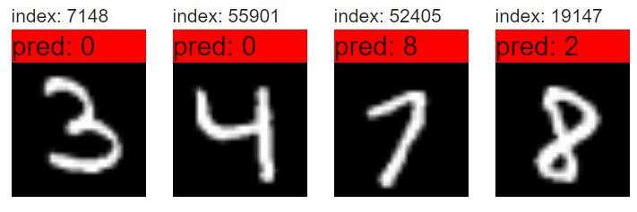
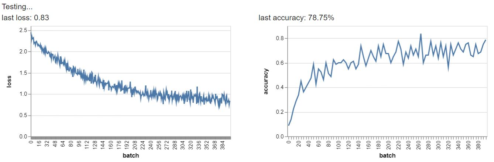

Assignment: 2
Name: Bibek K Pandit
Email: bibek@mit.edu
- (Problem 0) You should see in the leftmost column of Model Builder that the initial model is marked “Invalid model”. Why is the model invalid?
- This model is invalid because the model has a 2 dimensional input layer (non-flattened) mapping to 1 dimensional output layer. That is not allowed.
- (Problem 1) The classifications you are seeing are almost always wrong. Why is this? What performance should you expect from this particular network, i.e., how often should you expect it to be correct? Is this what you observe?
- The classification is wrong because the weights have been initialized to random values and those random values are being used to perform predictions. Thus, the classification is very random and mostly wrong. The network should get 1 prediction right out of every 10 predictions it performs. That is the result we observe roughly.
- (Problem 2) 1. What accuracy do you observe in training MNIST? How many inferences per second does the demo perform? How many examples per second does it train? Then try the same thing with Fashion MNIST and document your findings.
- The training accuracy as well as the test accuracy are around 84% on the MNIST data. The demo performs 1040 inferences per second. It trains 466 examples per second. Both the training accuracy and the test accuracy reach 80% on the Fashion MNIST data. The demo performs around 600 inferences per second. It trains around 400 examples per second.
- (Problem 2) 2. Change the Dataset to CIFAR-10. This will take about 30 seconds to load, due to the large number of images. Change the model back to Custom and add the flatten and fully connected layers as above. What accuracy do you observe in training CIFAR-10 after letting it train for a minute or two. You should find that it’s a lot worse than for MNIST. We’ll talk about why performance is bad when we discuss convolutional networks.
- Both the training accuracy and the test accuracy reach 38% on the CIFR-10 data. The demo performs around 650 inferences per second. It trains around 420 examples per second.
- (Problem 2) 3. Changing back to MNIST, let’s consider a simple idea for improving accuracy, which turns out not to work: just add more fully connected units, one on top of the other. Start training and you should see the accuracy plummet to zero, with terrible results. What’s going on?
- I think that we are getting exploding gradient problems here. Since there is no activation function, the gradient simply flow from one layer to the other. This very quickly builds up the weights (weight values become very high). So the predictions do not improve and we get Nans as output probabilities.
- (Problem 3) Return to the MNIST model with two FC layers you tried above and add a ReLU layer between the FC layers so that the sequence of layers becomes:
Input → Flatten → FC(10) → ReLU → FC(10) → Softmax → Label
Train the new model. How well does it perform? Then make the first FC model wider by increasing the number of units to 100. Does this make a difference? Document the results for these questions on your webpage.
- Addition of the ReLU solves the exploding gradients problem (we do not get NaNs anymore). However, with just 10 units in the first FC layer, the accuracy is just above 15% (not much better than random. (If we change the optimizer to adam, we can get 60% accuracy on training set and test set). Increasing the number of units to 100 in the first FC increases the accuracy to around 90% (optimizer is momentum). All this makes sense since with more units there are more parameters to tune. Thus, better accuracy can be achieved.
- (Problem 4) 1. Train your MNIST model with 1,2,3,4, and 5 FC layers, with ReLU between them. For each, use the same hyperparameters, and the same number of hidden units (except for the last layer). What were the training times and accuracy? Do you see any overfitting? What can you conclude about how many layers to use? Include screenshots of the Training Stats for each of your examples.
- The training times were 51s, 69s, 94s, 200s and 212s respectively for the MNIST models. The accuracies were 90%, 90%, 87%, 80% and 80% respectively. I did not see any overfitting although the accuracy fluctuated highly while training for models with more layers. 2 - 3 hidden layers seems the best option here.
1 Layer
2 Layers
3 Layers
4 Layers
5 Layers
- (Problem 4) 2. Build a model with 3 FC layers, with ReLU between them. Try making the first layer wide and the second narrow, and vice versa, using the same hyperparameters as before. Which performs better? Why do you think this is?
- The model which has first layer wide and second narrow works better. This can be explained by the fact that more information about images is conserved by the wider layer upfront while most of the information is lost if the layere upfront is narrow.
- (Problem 4) 3. Try the same experiments with Fashion MNIST and CIFAR-10. Do you get similar results?
- On both these datasets, the accuracy is considerably lower. However, unlike MNIST, the model actually gets better with more layers.
- (Problem 5) Reload the page a few times and examine the results. (On the Mac in Chrome, you can press command-R on the keyboard to reload the page.) Note that the images are selected at random, so the results will be different each time. Perform some experiments to observe the effect of changing BATCH_SIZE and NUM_BATCHES. What can you say about the effect on the graph of cross entropies (the observed loss)? Write a sentence or two describing your observations for your webpage. Try to explain what you see, at least in general.
- As we increase the batch_size and the number of batches, the final loss becomes smaller and smaller. This is because a bigger batch size assists back-propagation by helping it calculate the gradient more accurately. Also more batches means more updates and hence the loss goes down.
- (Problem 6) 1. Look at some of the testing results and try to find examples of classifications where the system does poorly and is even wrong. When you see interesting results, document them on your webpage.

- (Problem 6) 2. Experiment with changing the batch size and the number of batches to try to improve the testing results. Give a brief description of what you tried, and the results.
- I increased both the batch size and the number of batches and the accuracy just soared up.

- (Problem 6) 3. Experiment to see how your new model does and briefly report on the results.
- The model's accuracy went over 85% from around 70%.
- Add links to your code files on your website (please make these are text files and not screenshots so that the graders can run your code if necessary.
- Here is the link to modified code.
- Deep Art